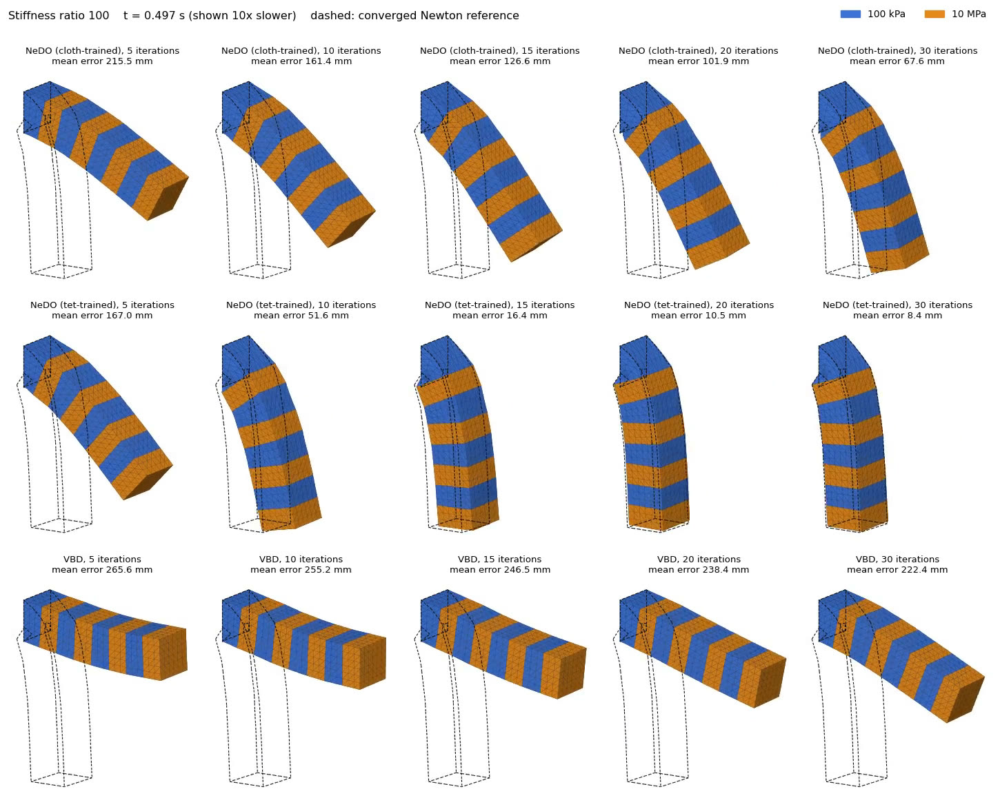
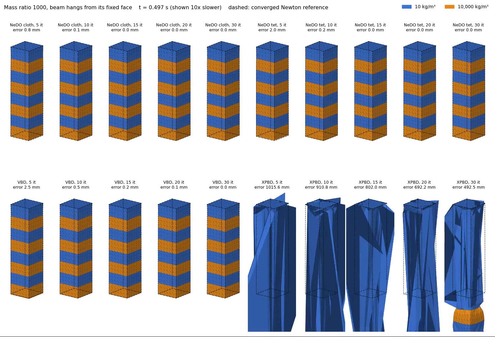

The network was trained on cloth only. Here it solves a volumetric beam without retraining and without any change to the network or its inputs.
A beam, fixed at one end and cut into 8 links along its length. The links alternate between two materials. One experiment changes the stiffness ratio between the two materials (beam sideways), the other the mass ratio (beam hanging). Each stiffness video has one row per method and one column per iteration count (5, 10, 15, 20, 30 per time step). The dashed outline is the converged Newton solution. NeDO (cloth-trained) is the baseline network of the ablations, unchanged. NeDO (tet-trained) is the same network trained on tet meshes.

Every second link is stiffer by the ratio on the horizontal axis (soft links 100 kPa). The vertical axis is the share of one time step's energy decrease that is still missing, on a log scale. Lower is better. Ratio 1 is the uniform beam. A missing point is a failed run or a run still in progress; the table below the charts says which.
| Method | Iterations | ×1 | ×2 | ×3 | ×5 | ×10 | ×20 | ×30 | ×50 | ×100 | ×300 | ×1000 |
|---|---|---|---|---|---|---|---|---|---|---|---|---|
| NeDO, cloth-trained | 5 it | 8.5 % | 3.2 % | 3.7 % | 8.1 % | 23 % | 42 % | 52 % | 62 % | 71 % | 26 % | fail |
| NeDO, cloth-trained | 10 it | 0.4 % | 0.6 % | 0.8 % | 0.8 % | 3.4 % | 20 % | 31 % | 45 % | 64 % | 75 % | fail |
| NeDO, cloth-trained | 15 it | 4e-5 | 1e-4 | 3e-4 | 9e-4 | 1.0 % | 9.1 % | 19 % | 33 % | 53 % | 76 % | fail |
| NeDO, cloth-trained | 20 it | 7e-6 | 2e-5 | 3e-5 | 1e-4 | 0.3 % | 4.0 % | 11 % | 23 % | 43 % | 72 % | 62 % |
| NeDO, cloth-trained | 30 it | 4e-8 | 4e-7 | 7e-7 | 3e-6 | 6e-4 | 1.0 % | 3.9 % | 12 % | 30 % | 60 % | 61 % |
| NeDO, tet-trained | 5 it | 13 % | 16 % | 17 % | 11 % | 6.9 % | 20 % | 28 % | 44 % | 61 % | 84 % | 93 % |
| NeDO, tet-trained | 10 it | 7e-4 | 0.8 % | 0.9 % | 1.0 % | 2.2 % | 3.2 % | 7.3 % | 17 % | 34 % | 62 % | 87 % |
| NeDO, tet-trained | 15 it | 3e-5 | 1e-4 | 4e-4 | 7e-4 | 0.3 % | 0.6 % | 2.5 % | 7.1 % | 19 % | 46 % | 78 % |
| NeDO, tet-trained | 20 it | 3e-6 | 1e-5 | 3e-5 | 7e-5 | 2e-4 | 0.2 % | 0.7 % | 2.5 % | 10 % | 35 % | 68 % |
| NeDO, tet-trained | 30 it | 1e-7 | 6e-7 | 1e-6 | 2e-6 | 8e-6 | 8e-5 | 8e-4 | 0.6 % | 3.6 % | 20 % | 47 % |
| VBD | 5 it | 15 % | 30 % | 41 % | 56 % | 74 % | 86 % | 91 % | 94 % | 97 % | 99 % | 100 % |
| VBD | 10 it | 2.2 % | 9.1 % | 17 % | 32 % | 54 % | 73 % | 82 % | 89 % | 94 % | 98 % | 99 % |
| VBD | 15 it | 0.3 % | 2.8 % | 7.5 % | 19 % | 40 % | 62 % | 73 % | 83 % | 92 % | 97 % | 99 % |
| VBD | 20 it | 6e-4 | 0.9 % | 3.2 % | 11 % | 30 % | 53 % | 65 % | 78 % | 89 % | 96 % | 99 % |
| VBD | 30 it | 2e-5 | 9e-4 | 0.6 % | 3.6 % | 17 % | 38 % | 52 % | 68 % | 83 % | 94 % | 98 % |
The beam is turned by 90°: the fixed face is on top and gravity pulls along the beam. The light links have 10 kg/m³ and the heavy links are denser by the ratio; 100 kPa everywhere. XPBD is a dual solver and is added here. Each video has the four methods at 5, 10, 15, 20 and 30 iterations per time step. The reference tip moves by 0.2 mm (ratio 1), 1.2 mm (10), 13 mm (100) and 152 mm (1000), so only the high ratios show visible motion.

Mean vertex distance to the converged Newton trajectory over the 150 steps, on a log scale. Lower is better. This section uses the distance, not the energy gap: the fixed point of XPBD is not the exact minimum of the time step, so its energy gap does not go to zero.
| Method | Iterations | ×1 | ×2 | ×3 | ×5 | ×10 | ×20 | ×30 | ×50 | ×100 | ×300 | ×1000 |
|---|---|---|---|---|---|---|---|---|---|---|---|---|
| NeDO, cloth-trained | 5 it | 0.85 | 0.77 | 0.81 | 0.74 | 0.89 | 0.92 | 0.95 | 0.84 | 0.74 | 1.90 | 0.54 |
| NeDO, cloth-trained | 10 it | 0.62 | 0.52 | 0.46 | 0.46 | 0.46 | 0.38 | 0.38 | 0.32 | 0.25 | 0.18 | 0.08 |
| NeDO, cloth-trained | 15 it | 0.43 | 0.35 | 0.32 | 0.30 | 0.30 | 0.26 | 0.24 | 0.16 | 0.14 | 0.03 | 0.03 |
| NeDO, cloth-trained | 20 it | 0.33 | 0.26 | 0.24 | 0.23 | 0.23 | 0.18 | 0.13 | 0.05 | 0.02 | 0.03 | 0.01 |
| NeDO, cloth-trained | 30 it | 0.23 | 0.18 | 0.17 | 0.16 | 0.13 | 0.06 | 0.02 | <0.01 | <0.01 | <0.01 | <0.01 |
| NeDO, tet-trained | 5 it | 3.15 | 31.05 | 24.43 | 21.77 | 0.44 | 0.32 | 0.35 | 0.53 | 2.05 | 0.77 | 2.55 |
| NeDO, tet-trained | 10 it | 0.12 | 0.10 | 0.08 | 0.07 | 0.13 | 0.23 | 0.29 | 0.21 | 0.22 | 0.15 | 0.36 |
| NeDO, tet-trained | 15 it | 0.06 | 0.06 | 0.05 | 0.09 | 0.10 | 0.09 | 0.06 | 0.05 | 0.07 | 0.02 | 0.07 |
| NeDO, tet-trained | 20 it | 0.04 | 0.04 | 0.04 | 2.68 | 0.04 | 0.03 | 0.02 | 0.02 | 0.02 | <0.01 | 0.08 |
| NeDO, tet-trained | 30 it | 0.03 | 0.03 | 0.02 | 0.04 | 0.01 | 0.01 | 0.01 | 0.01 | 0.01 | <0.01 | 0.01 |
| VBD | 5 it | 0.04 | 0.06 | 0.08 | 0.12 | 0.23 | 0.46 | 0.67 | 1.17 | 2.53 | 4.82 | 2.17 |
| VBD | 10 it | 0.03 | 0.04 | 0.06 | 0.09 | 0.18 | 0.35 | 0.54 | 0.95 | 2.11 | 1.51 | 0.37 |
| VBD | 15 it | 0.02 | 0.03 | 0.05 | 0.07 | 0.14 | 0.28 | 0.44 | 0.80 | 1.31 | 0.54 | 0.10 |
| VBD | 20 it | 0.02 | 0.03 | 0.04 | 0.06 | 0.12 | 0.24 | 0.38 | 0.68 | 0.80 | 0.21 | 0.03 |
| VBD | 30 it | 0.02 | 0.02 | 0.03 | 0.05 | 0.09 | 0.18 | 0.28 | 0.42 | 0.31 | 0.04 | <0.01 |
| XPBD | 5 it | 1.18 | 1.40 | 1.67 | 2.25 | 3.73 | 6.92 | 10.04 | 18.35 | 81.98 | 265.90 | 298.62 |
| XPBD | 10 it | 0.55 | 0.64 | 0.76 | 1.03 | 1.71 | 3.12 | 4.63 | 7.32 | 16.93 | 165.40 | 265.43 |
| XPBD | 15 it | 0.34 | 0.39 | 0.47 | 0.63 | 1.04 | 1.90 | 2.81 | 4.87 | 10.66 | 71.79 | 232.51 |
| XPBD | 20 it | 0.23 | 0.27 | 0.32 | 0.43 | 0.72 | 1.33 | 1.99 | 3.36 | 7.12 | 28.75 | 201.03 |
| XPBD | 30 it | 0.13 | 0.15 | 0.18 | 0.24 | 0.40 | 0.75 | 1.14 | 2.01 | 4.64 | 16.39 | 145.09 |
| Case | E·h / (m/Δt²) | NeDO, cloth-trained | VBD | ||||
|---|---|---|---|---|---|---|---|
| 5 it | 10 it | 30 it | 5 it | 10 it | 30 it | ||
| Uniform beam100 kPa, 1000 kg/m³ · beam moves up to 677 mm | 3.9 | 23.7 | 4.8 | <0.1 | 46.2 | 15.7 | 0.4 |
| Stiffness ratio 10links of 100 kPa and 1 MPa · beam moves up to 611 mm | 21.7 | 41.9 | 10.1 | 1.2 | 116.9 | 92.1 | 39.9 |
Each panel uses the same number of iterations per time step. The dashed box is the converged Newton solution at the same time. Playback is 10 times slower than real time.
Share of the energy decrease of one time step that is still missing after the given number of iterations: (Ek − E*) / (E0 − E*), geometric mean over the run. E* is the Newton minimum of that step. 0 % is converged. Each method runs its own trajectory.
| Case | E·h / (m/Δt²) | LeCO baseline | LeCO, context window 5 | VBD | Block Jacobi, damping 0.5 | ||||||||
|---|---|---|---|---|---|---|---|---|---|---|---|---|---|
| 5 it | 10 it | 30 it | 5 it | 10 it | 30 it | 5 it | 10 it | 30 it | 5 it | 10 it | 30 it | ||
| Cloth sheet (control)the energy it was trained on | – | 8.0 % | 0.3 % | 6e-7 | not run | ||||||||
| Cantilever, E = 10 kPaν 0.3 · beam moves up to 1020 mm | 0.4 | 1.4 % | 7e-6 | 9e-10 | 7e-4 | 3e-6 | 7e-11 | 8e-6 | 8e-11 | 9e-14 | 4.9 % | 0.3 % | 6e-8 |
| Cantilever, E = 100 kPaν 0.3 · beam moves up to 677 mm | 3.9 | 8.4 % | 0.4 % | 4e-8 | 1.3 % | 3e-5 | 3e-10 | 15 % | 2.2 % | 2e-5 | 60 % | 37 % | 5.4 % |
| Cantilever, E = 1 MPaν 0.3 · beam moves up to 111 mm | 39.4 | 26 % | 5.8 % | 8e-4 | 3.6 % | 2.1 % | 9e-7 | 81 % | 66 % | 29 % | 95 % | 90 % | 73 % |
| Cantilever, E = 10 MPaν 0.3 · beam moves up to 10 mm | 393.8 | 79 % | 71 % | 40 % | 54 % | 28 % | 2.4 % | 97 % | 95 % | 87 % | 99 % | 99 % | 96 % |
| Cantilever, E = 100 kPaν 0.45 · beam moves up to 600 mm | 3.9 | 6.6 % | 1.4 % | 3e-6 | 7.2 % | 0.3 % | 1e-7 | 43 % | 19 % | 1.0 % | 80 % | 63 % | 28 % |
| Cantilever, E = 100 kPaν 0.49 · beam moves up to 501 mm | 3.9 | 44 % | 19 % | 1.1 % | 23 % | 6.2 % | 4e-4 | 81 % | 66 % | 31 % | 95 % | 91 % | 73 % |
| Twist 90°, E = 100 kPaν 0.3 · beam moves up to 0 mm | 3.9 | 10 % | 0.3 % | 2e-8 | 1.7 % | 2e-5 | 3e-10 | 16 % | 2.6 % | 2e-5 | 61 % | 39 % | 6.1 % |
| Twist 90°, E = 1 MPaν 0.3 · beam moves up to 0 mm | 39.4 | 24 % | 3.3 % | 1e-4 | 4.9 % | 0.2 % | 1e-7 | 77 % | 61 % | 18 % | 91 % | 86 % | 67 % |
Mean vertex distance to the converged Newton trajectory, in mm, averaged over the 150 steps. The beam is 480 mm long.
| Case | E·h / (m/Δt²) | LeCO baseline | LeCO, context window 5 | VBD | Block Jacobi, damping 0.5 | ||||||||
|---|---|---|---|---|---|---|---|---|---|---|---|---|---|
| 5 it | 10 it | 30 it | 5 it | 10 it | 30 it | 5 it | 10 it | 30 it | 5 it | 10 it | 30 it | ||
| Cantilever, E = 10 kPaν 0.3 · beam moves up to 1020 mm | 0.4 | 11.6 | 1.0 | <0.1 | 0.5 | <0.1 | <0.1 | 0.3 | <0.1 | <0.1 | 41.2 | 8.9 | <0.1 |
| Cantilever, E = 100 kPaν 0.3 · beam moves up to 677 mm | 3.9 | 23.8 | 4.7 | <0.1 | 2.0 | 0.1 | <0.1 | 46.2 | 15.7 | 0.4 | 116.1 | 83.8 | 26.2 |
| Cantilever, E = 1 MPaν 0.3 · beam moves up to 111 mm | 39.4 | 14.0 | 5.6 | 0.6 | 0.9 | 3.1 | <0.1 | 21.5 | 22.9 | 15.3 | 18.1 | 19.0 | 22.7 |
| Cantilever, E = 10 MPaν 0.3 · beam moves up to 10 mm | 393.8 | 4.4 | 2.5 | 1.3 | 1.3 | 1.0 | 0.4 | 1.4 | 1.7 | 1.6 | 1.8 | 1.4 | 1.6 |
| Cantilever, E = 100 kPaν 0.45 · beam moves up to 600 mm | 3.9 | 8.3 | 5.9 | 0.1 | 5.2 | 1.6 | <0.1 | 75.0 | 42.6 | 8.2 | 122.3 | 103.7 | 55.4 |
| Cantilever, E = 100 kPaν 0.49 · beam moves up to 501 mm | 3.9 | 55.3 | 24.6 | 5.2 | 11.4 | 6.5 | 0.3 | 105.0 | 88.2 | 48.5 | 121.2 | 114.9 | 96.1 |
| Twist 90°, E = 100 kPaν 0.3 · beam moves up to 0 mm | 3.9 | 3.9 | 0.5 | <0.1 | 0.8 | <0.1 | <0.1 | 6.7 | 2.8 | 0.1 | 7.6 | 8.3 | 4.4 |
| Twist 90°, E = 1 MPaν 0.3 · beam moves up to 0 mm | 39.4 | 0.3 | 0.1 | <0.1 | 0.1 | <0.1 | <0.1 | 0.8 | 0.6 | 0.3 | 1.9 | 1.2 | 0.7 |
Cuboid 0.48 × 0.12 × 0.12 m, 24 × 6 × 6 cells of 6 tets, density 1000 kg/m³, gravity, time step 1/300 s (the training time step). Energy: inertia + gravity + stable Neo-Hookean. No contact, no DAT. Cantilever: one end face is fixed. Twist: both end faces are held and one turns.
Input per vertex: gradient, previous gradient, last update. Graph: the tet edges (11.5 neighbours per vertex; cloth has about 6). The loop is the one of SolverLearned.step; the step scale carries over between time steps. Float32 network, float64 energy.
Newton: projected Newton with line search, converged (reference). VBD: coloured Gauss-Seidel with 3 × 3 vertex blocks, 8 colours, no acceleration. Block Jacobi: the same blocks for all vertices at once. XPBD (mass-ratio test only): Gauss-Seidel over the tets in 28 colours, one energy constraint C = √(2VΨ) per tet, multipliers reset at every time step, no substeps. These are my own plain implementations for this test.